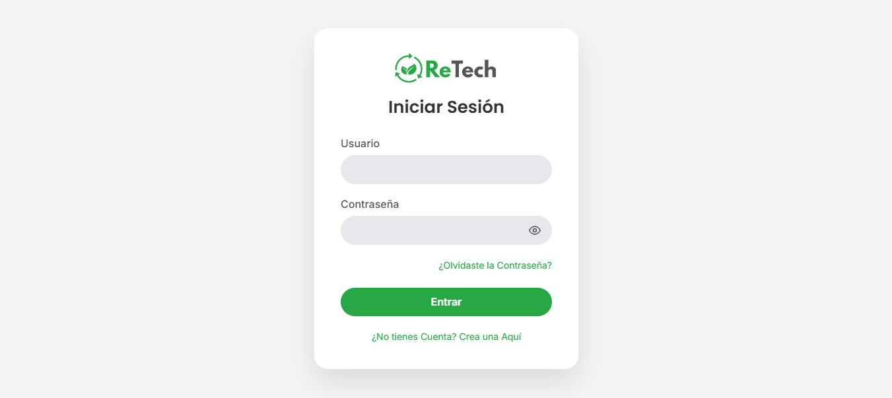
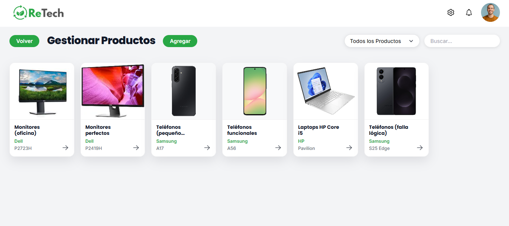

ReTech
Aplicación responsive para la gestión de la logística inversa aplicado en empresas tecnológicas con modelo de economía circular en Venezuela.

Descripción
ReTech es una aplicación responsive desarrollada para la gestión de la logística inversa en empresas tecnológicas con modelo de economía circular en Venezuela. Su propósito es facilitar el registro de productos devueltos, la clasificación, las piezas recuperadas y los envíos, mejorando la trazabilidad de la información y reduciendo la dependencia de métodos manuales.
El Reto
Las empresas tecnológicas con modelo de economía circular en Venezuela enfrentaban dificultades significativas para gestionar el flujo inverso de productos devueltos. La falta de herramientas digitales adecuadas generaba procesos manuales ineficientes, pérdida de trazabilidad y dificultad en la clasificación y seguimiento de componentes recuperados.
La Solución
Se diseñó y desarrolló una aplicación responsive funcional que facilita el registro, clasificación y seguimiento de los productos devueltos. Se implementó una metodología híbrida combinando los enfoques de Beck (1999), Powell (2001) y Kendall y Kendall (2005), definida en cinco fases: Planificación, Diseño, Codificación, Pruebas, y Desarrollo y documentación del software.
Investigación
La investigación se sustentó de los aportes teóricos de Cecibel (2023), Loaiza (2023), Das y Pandey (2024), Gómez (2024), García y Moran (2019), entre otros. Con base al tipo de investigación, es de tipo descriptiva y proyectiva, con un diseño no experimental y de campo. La población comprendida estuvo conformada por tres (3) ingenieros industriales, dos (2) licenciados en ciencias ambientales y un (1) licenciado en administración de empresas. Para la recolección de datos se aplicó la técnica de entrevista semi-estructurada.
Tecnologías
Resultado Destacado
Aplicación funcional alojada en producción que mejora la trazabilidad y reduce la dependencia de métodos manuales en la gestión de logística inversa.
Oportunidad Comercial
Sistema escalable y listo para producción. Arquitectura disponible para licenciamiento comercial o implementación a medida.
Capturas del Proyecto

